FILA-012 UI/v01 · CANON VISUAL
Quatro fontes geradas: moldura e marcadores da barra de progresso, caselas bloqueada e desbloqueada do catálogo. Quatro fontes v01 e previas aceitas visualmente pelo dono. Sem integracao runtime. Recibo de aceite.
· Auditoria
U01 · moldura da barra
Aceita visualmente como exibida; encaixe no HUD pendente
180px de largura · escala proporcional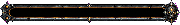
360px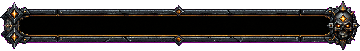
Referência de espessura da barra atual: 4px (esquema)
Canal escuro livre e caveira na ponta direita. O canvas nativo não respeita 8:1; a silhueta recortada mede aproximadamente 7,07:1. Em largura 180px, a candidata tem 25px de altura, enquanto a barra atual tem 4px. Aplicação exigirá decisão de layout; esta prévia não prova compatibilidade com o HUD.
Fonte PNG · Prompt · Prévia com alfa
U02 · marcadores
Marcadores v01 aceitos visualmente nas previas exibidas
16px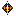
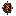
24px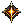
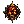
32px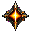
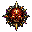
48px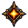
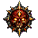
Losango âmbar à esquerda, caveira vermelha com olhos âmbar à direita. A caveira é maior na fonte; as prévias isolam as duas células e ajustam cada ícone proporcionalmente ao mesmo canvas, com margem. Em 16px a caveira perde detalhes.
Fonte PNG · Prompt · Prévia com alfa
U03 / U04 · estados do catálogo
Par v01 aceito visualmente como exibido
Bloqueada · 128px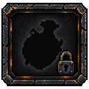
Desbloqueada · 128px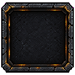
Comparar em 64px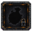
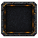
Mesma família de moldura. U03 tem silhueta de frasco e cadeado inferior direito; U04 deixa o centro livre. Há padrão quadriculado pintado no interior, sobretudo em U03; ele é textura opaca, não transparência real. As prévias mantêm o padrão e usam um único recorte e escala para o par.
Fonte U03 · Prompt U03 · Fonte U04 · Prompt U04
Preparação técnica: remoção somente de magenta conectado às bordas, recorte e escala proporcional com filtro nearest. Nativos intactos. Sem retoque criativo, integração, Git ou promoção a CANON. Durvall e playtest da névoa permanecem pendentes.